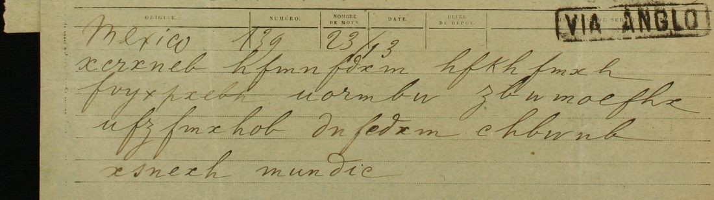
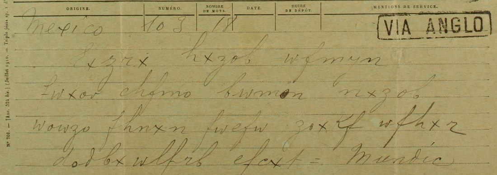

At a glanceCiphertext-only break · partial (82% of the cipher)
- The telegrams
- Two received forms (“VIA ANGLO”, Paris Bourse stamps of 13 February and 15 March 1912) from Mexico to Luis L. de la Barra, 9 rue Alfred de Vigny, Paris, signed “Mundic” in clear. The first has 10 cipher words (75 letters), the second 15 groups of five (75 letters).
- Where
- CEHM-Carso, Mexico City, Fondo X-1 (manuscritos de Francisco León de la Barra), X-1.3.207.1 and X-1.3.239.1. Not on DECODE. Part of catalogue entry 1463; of its other items, X-1.4.310.1 is read on its own page, X-1.4.380.1 is in clear, and X-1.1.94.1 is a name-number nomenclator whose key is not found.
- The cipher
- A lower-case monoalphabetic substitution of Spanish letters, 21 cipher letters, the same key in both telegrams. Two cipher letters stand for two plain letters each (n = t or u, u = n or w).
- How it was read
- No key or decipherment is known. Annealing over the 150 letters with Spanish 4-grams gave fragments; the word division of the first telegram finished the key by hand. A key frozen on the first telegram alone then read 72 of the 75 letters of the second correctly, none wrong; three letters are not in the frozen key (58 of 60 on lines 2–4, which the integration reader’s script counts; line 1 by hand, 14 of 15).
- What it says
- “Aplaudo resuelvas regresar. Embajador Wilson considera necesario vuelvas pronto ayudar.” and, a month later, a good impression, an uncertain situation, a general and lively longing for peace.
- Still open
- Neither telegram reaches the 95% bar: three words of the first carry a marked one-letter repair and the opening letter of the second is unread. The held-out test was not blind (both telegrams were solved together first) and its order rests on the contributor’s record. “Mundic” is not identified.
- Credit
- Transcription, solve and reading by WAINUT with AI language-model agents, from the CEHM images; no human palaeographer checked the text. The project re-ran the scripts, ran its own controls and compared the images.
01 The telegrams
Two telegram forms from the manuscripts of Francisco León de la Barra (the notes give as context that he left the interim presidency in November 1911 and went to Europe; this was not checked here). Both are addressed to Luis L. de la Barra in Paris (telegraphic address “Barradella”) and carry the stamp of the Paris Bourse. The first, Mexico no. 139, 23 words, was stamped on 13 February 1912; the second, Mexico no. 103, 18 words, on 15 March 1912. Each ends with the signature “Mundic”, written in clear. The archive lists them as in code, with no translation.

02 The key
The key is a one-to-one substitution of letters with two exceptions: the cipher letter n stands for both t and u (situación has both: m-o-n-n-x-z-o-b-w), and u stands for n (necesario) and w (Wilson). Twenty-one cipher letters occur. Annealing over the 150 letters with 4-gram statistics from two Spanish texts gave fragments (considera necesario, situación incierta tendencia); the word division of the first telegram let the rest be set by hand (regresar, Wilson, pronto), and each value was checked on enlarged crops.
The key sheet that the same fonds keeps (X-1.5.466.1, “Abecedario y su clave”) was tried both ways and reads no Spanish, so it is a different key. The 1913 telegram of X-1.4.310.1, read on its own page, is in yet another key.
03 The test
The contributor froze the values that the first telegram needs (19 cipher letters, the majority value where it has two) and applied them mechanically to the second. They read 72 of its 75 letters correctly, with none wrong; three letters (l twice, t once) are not in the frozen key. The frozen key alone turns the second telegram into “?aclaraciones buena impresion situacion incierta tendencia general vivo an?elo de pa?”.
Two limits belong with that figure. Both telegrams were solved together in the first machine run, so the second was not unseen in the strict sense, and the freezing before the count rests on the contributor’s record (a single commit; no external timestamp). With only 150 cipher letters, overfitting is the obvious risk, so the project ran its own control: the second telegram decoded with the frozen key scores −2.317 per letter in a Spanish 4-gram model, against −6.91 on average (best −3.99, z 5.1) for 2,000 keys that give the same plain values to shuffled cipher letters. The contributor’s own statistical check on the 149 read letters gives −2.899 against −7.18 for random keys (z 5.9) and −3.68 at best for a key annealed onto the shuffled text (z 6.7, but from only 6 refits, p 0.14); verdict: pass.
04 The reading
13 Feb 1912. Aplaudo resuelvas regresar. Embajador Wilson considera necesario vuelvas pronto ayudar. Mundic.
15 Mar 1912. [H...] aclaraciones, buena impresión. Situación incierta; tendencia general, vivo anhelo de paz. Mundic.
In English: “I applaud your decision to return. Ambassador Wilson considers it necessary that you come back soon to help.” And: “[…] explanations, good impression. Situation uncertain; general tendency, lively longing for peace.” The ambassador is presumably Henry Lane Wilson, the United States ambassador in Mexico. (That background is not from the sources and was not checked here.)

Counted by the README rule, strictly: the first telegram has 10 cipher words, 7 read verbatim from the signs and 3 with a marked one-letter repair (resue{+l}vas, a letter missing; embajad{i/o}r, a sign that is i everywhere else; vue{d/l}vas, d for l), so 70%. The second has 12, 11 verbatim and the opening h not read, 91.7%. Together 18 of 22, 81.8%, so both texts are read in part. A reader of the sentences found them coherent: grade B for the first, A for the second.
05 What remains uncertain
- The opening letter of the second telegram (h) is not read; it may end a word such as Hechas. Nothing on the form decides it (too short).
- First telegram, line 2, first group, eighth letter: it may be this hand’s b (= o), which would make embajador verbatim; it could not be settled on a 5× crop, so the repair stays marked (illegible).
- buena rests on reading the first sign of the fourth group of the second telegram as a variant f (pass 1 f, pass 2 t); a second reader also reads f.
- The three slips of the first telegram are read from sense; ten cipher words give no second place for any. The values t = z and l = h rest on one and two occurrences.
- The second pass of both transcriptions was made after a first machine solve had been seen. The images were compared again at the integration (all groups agree at that reading), and a second AI reader re-read the signs blind from the scans, agreeing in all but one.
- “Mundic” is not identified. No decipherment is on the forms or in the fonds, and none was found in print; Narváez’s 2019 book on Mexican cryptography was not read, so a printed reading cannot be ruled out.
Full texts
The transcription and the decryption of every document on this page, so that the reading can be used and checked. Short files are shown here; all are in the repository.
Telegram of 13 Feb 1912 read in part
Mundic applauds Luis de la Barra's decision to return: Ambassador (Henry Lane) Wilson considers it necessary that he come back soon to help.
Builds coherent sentences, but under the read bar of 95% of words read as sense (70% here); the holes are marked in the reading.
Transcription
# X-1.3.207.1 (CEHM-Carso, Fondo X-1), image 0001. Reconciled. Two disagreements settled on the 2x crops: # L2 g1 last letter: pass 1 b, pass 2 h; the crop shows an open hump with a tail (h), unlike the closed bowl of b in xcrxneb. -> h # L2 g3 last letter: pass 1 z, pass 2 x; the crop shows a crossed x with a long exit stroke, not the z of the first letter. -> x # Caveat: pass 2 was made after a first machine solve had been seen, so it is not blind on these two letters. # Doubtful sign (independent blind review, 12 Nov 2026): L2 g1 8th letter, written here o. On a 5x crop it is a small # bowl with a thin tall loop rising from it: it could be this hand's b (= o, making "embajador" verbatim) or an o # (= i, read with a marked repair). Not settled; o is kept and the repair stays marked. L1 xcrxneb hfmnfdxm hfkhfmxh L2 fvyxpxeoh uormbw zbwmoefhx L3 ufzfmxhob dnfedxm chbwnb L4 xsnexh =mundic=
Decryption
L1 apla(t|u)do res(t|u)evas regresar L2 embajadir (n|w)ilson considera L3 (n|w)ecesario v(t|u)edvas pron(t|u)o L4 ay(t|u)dar mundic
Reading
# X-1.3.207.1: "Mundic" to Luis León de la Barra, Mexico to Paris, telegram of 13 February 1912 (reading)
CEHM-Carso, Fondo X-1 (Manuscritos de Francisco León de la Barra), X-1.3.207.1, image 0001 (received form, Paris
Bourse stamp 13 Feb 12, "VIA ANGLO"; Mexico no. 139, 23 words). Address on image 0002: "Barradella 42 / M. Luis L. de
la Barra / 9 Alfred de Vigny / Paris". The whole text is in cipher except the signature "mundic".
Marks: `{x/y}` the mechanical value x read as y; `{+a}` a letter added; `«...»` decoded but not read. A two-valued key
letter (t|u, n|w) is read as either value without a mark; that is a property of the key, not a repair.
```marked
L1 | Aplaudo resue{+l}vas regresar.
L2 | Embajad{i/o}r Wilson considera
L3 | necesario vue{d/l}vas pronto
L4 | ayudar. Mundic.
```
Spanish, normalised: Aplaudo resuelvas regresar. Embajador Wilson considera necesario vuelvas pronto ayudar. Mundic.
Notes
- resue{+l}vas: the group hfmnfdxm has no letter for l (r-e-s-u-e-v-a-s). The encoder or the telegraph dropped it.
- Embajad{i/o}r: the group fvyxpxeoh has o, which is i everywhere else in this key (8 times); here it must be o.
The independent blind review (12 Nov 2026) found that this sign may be the b of this hand (b = o), which would make
the word verbatim; it could not settle it, so the repair stays marked (transcription_207.txt header).
- vue{d/l}vas: the group dnfedxm has e (= d in aplaudo, considera, ayudar); l is r elsewhere (aplaudo, Wilson).
- "Embajador Wilson" is Henry Lane Wilson, United States ambassador in Mexico 1910-1913.
- Telegraphic style: "Aplaudo [que] resuelvas regresar", "considera necesario [que] vuelvas pronto [a] ayudar".
Words from the cipher: 10: 7 verbatim, 3 with a marked one-letter repair, 0 guesses, 0 holes, 0 from a gloss; plus the
clear signature (scripts/check_marks.py counts it, so it prints 11 with 8 verbatim).Translation
# X-1.3.207.1: translation (English)
Telegram, Mexico to Paris, 13 February 1912, to Luis L. de la Barra, 9 rue Alfred de Vigny.
"I applaud [your decision that] you are resolved to return. Ambassador Wilson considers it necessary that you come
back soon to help. Mundic."
Repairs carried over from the reading: "resolved" (one letter added: resue{+l}vas), "Ambassador" (one letter changed),
"come back" (one letter changed). No holes.Telegram of 15 Mar 1912 read in part
Explanations given, good impression; the situation uncertain; the general tendency a keen desire for peace.
Builds coherent sentences, but under the read bar of 95% of words read as sense (92% here); the holes are marked in the reading.
Transcription
# X-1.3.239.1 (CEHM-Carso, Fondo X-1), image 0001. Reconciled. The clerk wrote 15 groups of five (the last line runs # two groups together as dodbxwlfrb, kept as written), then "=" and the signature. # L2 g1 first letter: pass 1 f, pass 2 t. The 3x crop shows a tall loop with a stroke across the foot, unlike the t of # efcxt (short stem, bar high). Settled as f, a variant form of this clerk's f. Weakest letter of the transcription. # L2 g1 last letter: pass 1 r, pass 2 v. The 3x crop shows an open v with a flick, not the peaked r of lxzrx. -> v # L3 g5 last letter: pass 1 z, pass 2 r. The crop shows the "2"-shaped r, no descender as on the z of zoxkf. -> r # Caveat: pass 2 was made after a first machine solve had been seen, so it is not blind on these letters. L1 lxzrx hxzob wfmyn L2 fwxov chfmo bwmon nxzob L3 wowzo fhnxn fwefw zoxkf wfhxr L4 dodbxwlfrb efcxt = =mundic=
Decryption
L1 hacla racio nesb(t|u) L2 enaim presi onsi(t|u) (t|u)acio L3 ninci er(t|u)a(t|u) enden ciage neral L4 vivoanhelo depaz = mundic
Reading
# X-1.3.239.1: "Mundic" to Luis León de la Barra, Mexico to Paris, telegram of 15 March 1912 (reading) CEHM-Carso, Fondo X-1, X-1.3.239.1, image 0001 (received form, Paris Bourse stamp 15 Mars 12, "VIA ANGLO"; Mexico no. 103, 18 words). The text is 15 groups of five letters, then "=" and the signature "Mundic" in clear. Marks as in reading_207.md. Line breaks fall inside words, as the five-letter groups do. ```marked L1 | «H» aclaraciones bu- L2 | ena impresión. Situació- L3 | n incierta, tendencia general L4 | vivo anhelo de paz. = Mundic. ``` Spanish, normalised: [H...] aclaraciones, buena impresión. Situación incierta; tendencia general, vivo anhelo de paz. Mundic. Notes - The first letter, l = h (as in anhelo), stands before "aclaraciones" and is not read. It could be the end of a word cut off by the encoder (for instance "Hechas aclaraciones"), but nothing on the form supports one choice. - "buena" rests on f read for the first letter of the fourth group (see transcription_239.txt); this is the weakest sign of the telegram. - Every other word is verbatim from the signs with the frozen key; n stands for both t and u (situación has both). Words from the cipher: 12 (the unread h counted as one): 11 verbatim, 0 repairs, 0 guesses, 1 not read, 0 holes, 0 from a gloss; plus the clear signature. (scripts/check_marks.py counts the halves of bu-ena and situació-n as separate words, so it prints 15 with 14 verbatim.)
Translation
# X-1.3.239.1: translation (English) Telegram, Mexico to Paris, 15 March 1912, to Luis L. de la Barra. "[H...] explanations, good impression. Situation uncertain; general tendency: a keen desire for peace. Mundic." Hole carried over from the reading: the first letter (h) is not read.
Key: key.tsv, key_frozen.tsv
06 Sources
- CEHM-Carso (Centro de Estudios de Historia de México, Fundación Carlos Slim), Fondo X-1: X-1.3.207.1 and X-1.3.239.1 (images 0001 and 0002 each, direct JPG from the CEHM viewer, fetched 12 November 2026; the viewer refused nothing), and the key sheet X-1.5.466.1.
- Transcription, key, readings and scripts by WAINUT (pull request #466), in
targets/mundic1912.
The key, the transcriptions, the readings and the checks are in targets/mundic1912.
Cite this page
WAINUT and Daniel Bourdeau, ““Mundic” to Luis León de la Barra, February and March 1912”, Cyphersolver, posted 12 November 2026, https://cyphersolver.com/mundic1912.html.